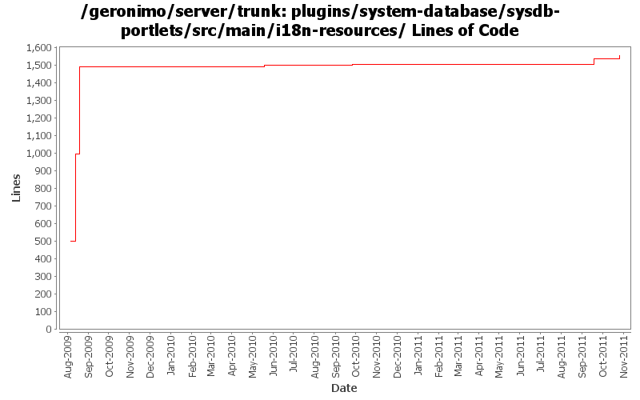

[root]/plugins/system-database/sysdb-portlets/src/main/i18n-resources

| Author | Changes | Lines of Code | Lines per Change |
|---|---|---|---|
| Totals | 20 (100.0%) | 1355 (100.0%) | 67.7 |
| xuhaihong | 8 (40.0%) | 498 (36.8%) | 62.2 |
| gawor | 2 (10.0%) | 497 (36.7%) | 248.5 |
| genspring | 6 (30.0%) | 167 (12.3%) | 27.8 |
| kevan | 2 (10.0%) | 144 (10.6%) | 72.0 |
| violalu | 2 (10.0%) | 49 (3.6%) | 24.5 |
GERONIMO-6202 tranql update
18 lines of code changed in 1 file:
GERONIMO-5209 add tranql xa for db2 iseries
31 lines of code changed in 1 file:
GERONIMO-5323 Chinese and Japanese Translation for JIRA 5055
16 lines of code changed in 1 file:
applying additional patch of GERONIMO-5055
16 lines of code changed in 1 file:
GERONIMO-4977 Geronimo EN/Simp.Chinese UI information improvement for Console, thanks Jeff for the patch !
135 lines of code changed in 4 files:
GERONIMO-4678 merge revision 830798 into trunk. Original patch from Kan Ogawa
144 lines of code changed in 2 files:
Initial Japanese translation. Patch from Kan Ogawa (GERONIMO-4678)
497 lines of code changed in 2 files:
GERONIMO-4769 Add English resource bundle for Admin console (Patch from Jack Cai)
498 lines of code changed in 4 files:
GERONIMO-4763 i18n properties files should be converted to ascii at build time. (Patch from Shawn Jiang)
0 lines of code changed in 4 files: